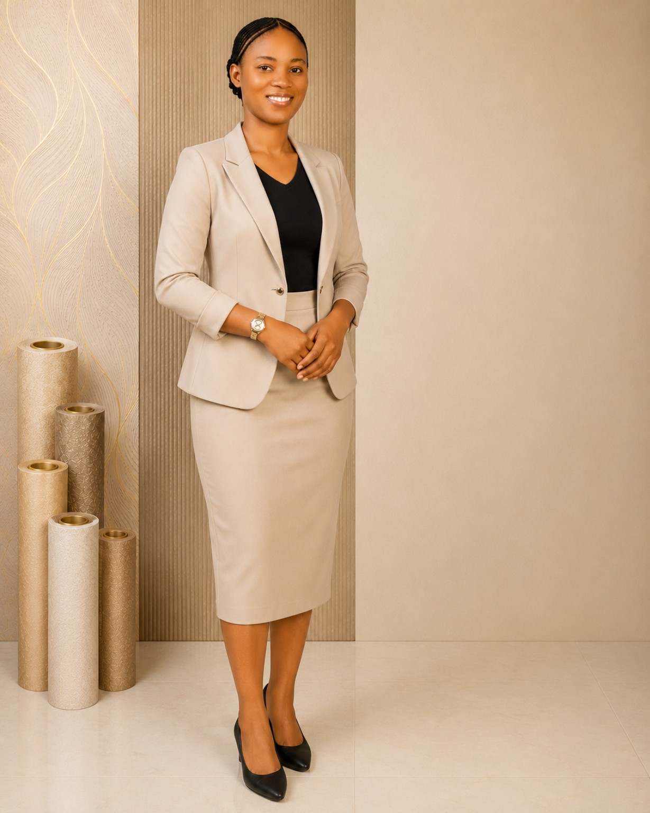
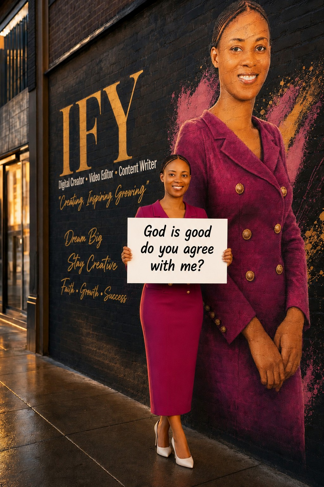
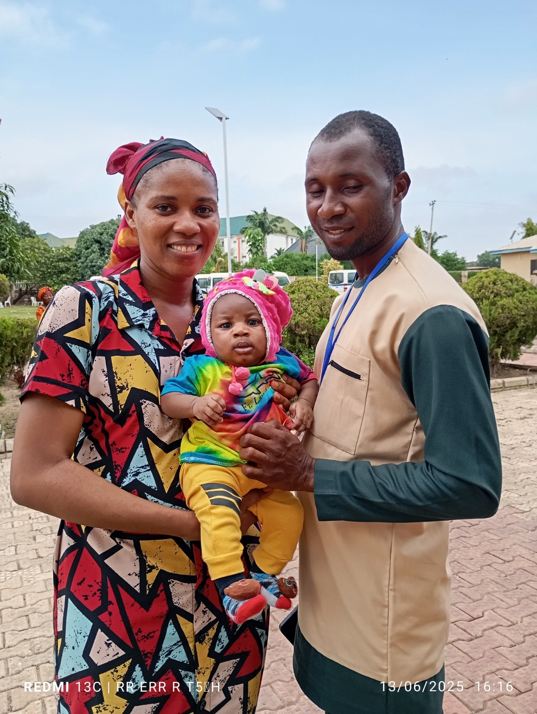

01
Business Advertisement with AI
AI-assisted concepts and promotional visuals designed to help businesses communicate offers.
I’m Ifunanya Esther Chibuzor, publicly known as Esther Ify — an Economics graduate building at the intersection of Economics, AI, digital content and creative technology.


I am an Economics graduate with practical experience in administration, cashiering, equipment handling, online product information, sales and digital content creation. I enjoy using AI and creative technology to turn ideas into engaging content.
I am building a professional path at the intersection of Economics, AI, digital content and creative technology, while expanding my knowledge in Artificial Intelligence, Data Analysis and Software Engineering.
Academic foundation in economics and analytical thinking.
Using AI tools to develop ideas and creative assets.
Video, copy, storytelling and digital publishing.
Curious, adaptable and committed to continuous learning.
A professional foundation combining an Economics degree with practical digital, AI and creative training.
My current toolkit spans AI content, visual design, video, writing, digital storytelling and practical office support.
Creative concepts, characters, visuals, videos and digital assets.
Developing clear prompts for creative and practical AI workflows.
Editing and preparing content for online publishing.
Creating visual communication for brands and projects.
Writing clear, engaging content and creative narratives.
Voice-over support for digital content.
ChatGPT, Google Gemini, Google Flow, Suno, Flow Music, InVideo, Canva, CapCut, GitHub.
Organization, records, customer service and practical office support.
Professional creative services presented with a focus on clarity, quality and useful digital communication.
AI-assisted concepts and promotional visuals designed to help businesses communicate offers.
Polished edits for social media, campaigns and digital storytelling.
Captions, promotional copy, scripts and engaging written content.
Creative AI-generated content for brands, products and campaigns.
Voice support for videos, explainers, social content and creative projects.
Swipe or use the arrows to explore the visual work. Images are displayed with contain so the original designs are not cut off.
The portfolio also reflects the personal and community side of my story.

A personal family photograph included as part of the story behind the person and the work.
Family-focused visual storytelling created with a warm, celebratory style.
Selected experience from the CV, presented without the thrift-clothing role.
Recorded and maintained information about projectors and customer items; received and tested projectors; prepared equipment; maintained records; handled cashiering; and supported daily office operations.
Organized product information for items listed online, labelled client products accurately, documented functions and durability, and helped keep information clearly presented.
Create and publish original children's digital content; develop stories, lyrics and visual ideas; use AI tools to create characters, images, videos, music and creative assets; edit videos; and manage projects from idea through publishing.
Active choir member participating in rehearsals and musical performances.
For digital content, AI-assisted creative work, video editing, copywriting or promotional content, feel free to reach out.
Explore the creative projects and social links connected to the portfolio.